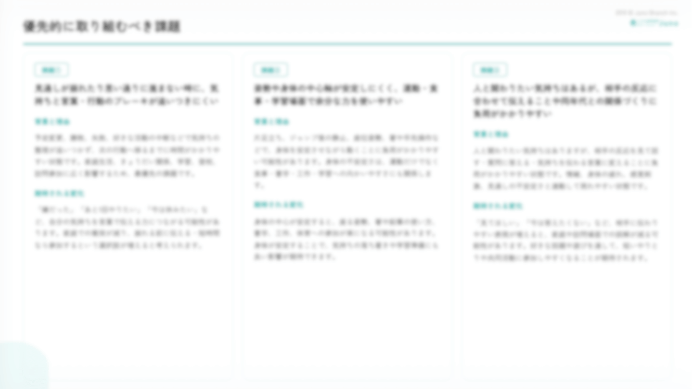
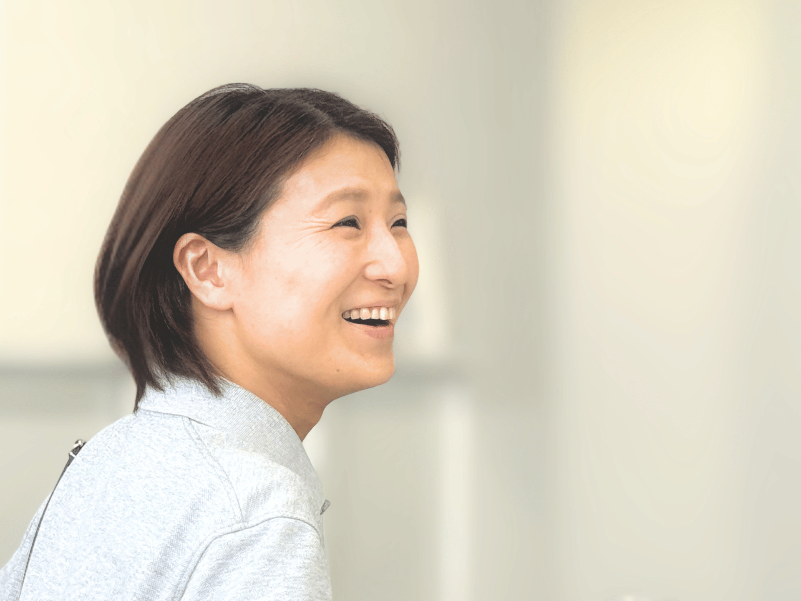
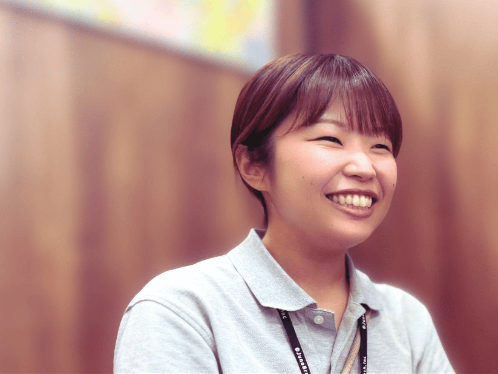
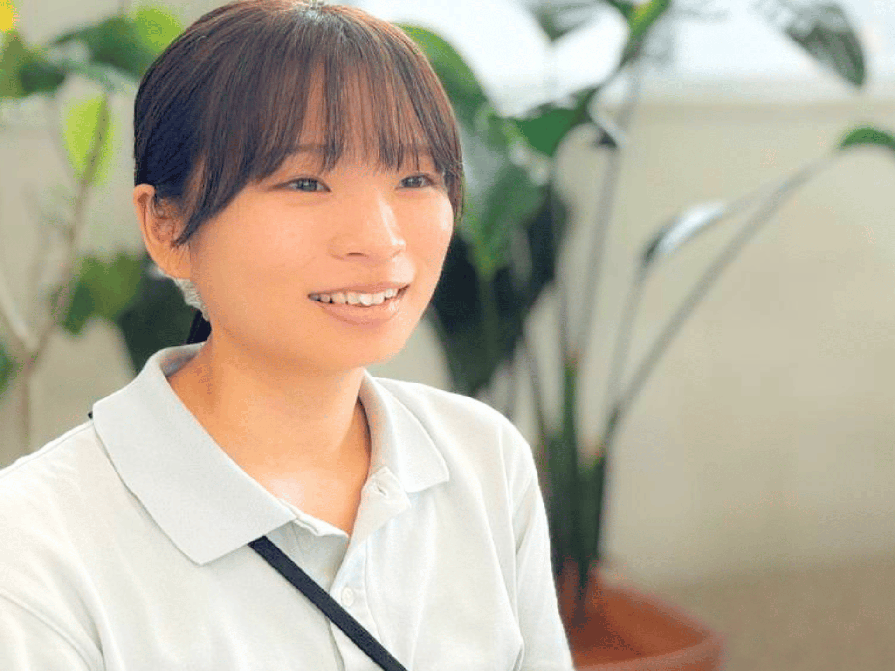
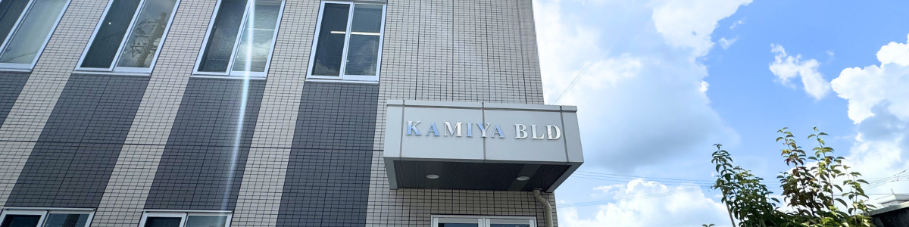

Recruit
子どもと家族に、長く寄り添えるしごとへ。
Junoは0〜15歳のお子さまを対象にした、小児・児童精神特化型の訪問看護ステーションです。スタッフ全員が訪問看護未経験からスタートしており、「子どもに寄り添いたい」という思いがあれば、充実した教育体制と支援データがあなたの訪問をしっかりと支えます。まずは気軽に雰囲気を見に来てください。カジュアル面談（Zoom可）を随時受け付けています。
未経験でも大丈夫
在籍スタッフ全員が訪問看護未経験からスタート。病棟・クリニック・NICU・他業種からの転職者が活躍中です。
成長を家族と共に喜べる
病棟と違い、同じお子さまと中長期でかかわれます。小さな変化を積み重ね、ご家族と一緒に喜べることがやりがいです。
訪問に集中できる体制
記録はスマホ・タブレットで完結。看護計画書・医師報告書の作成は管理スタッフが担当し、事務負担を最小化しています。
働きやすさを大切に
残業は月10時間以内、有休消化率80％以上。子育て中スタッフも多く在籍しており、急な休みにも柔軟に対応しています。
まずカジュアル面談から
「話だけ聞いてみたい」「職場を見てみたい」という段階でも大歓迎。Zoom面談も可能ですので、気軽にご連絡ください。
経験や勘に頼らず、データと論文に基づいた支援を届けます。
Junoでは、国内外の学術論文・独自チェック項目・訪問観察データなどを活用し、お子さまの課題と改善アプローチの仮説を整理したうえで訪問します。この仕組みを「Juno PDCA」と呼んでいます。支援の根拠が明確となるため訪問の再現性が高くなり、特定の看護師の経験や感覚だけに依存しません。訪問前に「何を見るか」「どんな関わりが効果的か」が整理されているので、未経験の方でも訪問で迷いが生じにくい環境です。また訪問中に疑問が出たときは「質問箱」として随時相談できるため、一人で抱え込む必要がありません。

未経験でも、2〜3か月でおおよその訪問が可能になります。
入職〜1か月
法定研修・座学研修からスタート。記録の作成方法、連絡・記録ツール、データベースの使い方を学びます。同行訪問で実際の関わりを見ながら、観察ポイントや遊びの意図を先輩と一緒に振り返ります。
2〜3か月
訪問頻度を徐々に増やし、FAQや遊びのデータベースを活用しながら経験を積みます。迷ったときは「質問箱」で随時相談でき、一人で抱え込まない環境が整っています。
3か月以降〜
自分のペースで訪問できるようになります。毎月の会議では研究論文の共有やケース検討を実施。小児発達支援・児童精神特化型看護のプロフェッショナルを目指せます。
ご家族へのかかわりも、Junoの大切な柱です
お子さまの状態だけでなく、保護者のご不安や日常の困りごとにも寄り添いながら、分析データをもとに家庭での関わり方を一緒に考えます。お子さまとご家族の両方に向き合えることが、Junoで働く大きな魅力のひとつです。

働きやすい環境で見つけた
自分の変化と働く喜び
Junoはとても働きやすい職場だと感じています。いつでも相談でき、声を掛け合える仲間がいるのでとても安心感があります。自分の悩みやうまくいかない部分も素直に出すことができ、昔からの友人にも「変わったね！」と言われるくらい良い意味でリラックスして働けています。Junoで1年と少し働いていますが、以前とは違い「明日は仕事か、嫌だな」というネガティブな気持ちは全くなくなりました。こんなに働きやすい職場があるんだなあと実感しています。
初めての訪問先や異なるルートになった時でも不安を感じることはありません。毎日安心して働ける環境で過ごせています。また、継続した訪問の中で、お子さまの成長を感じたり、お母さんの表情が和らいでいく様子を見て、その家庭の雰囲気が良くなっていると実感できる瞬間は本当に嬉しく思います。
子どもの発達障害特化型
ステーションを選んだ理由
これまでは病棟勤務で内科・外科・小児科など多様な経験をしてきました。特に小児科時代、子どものアレルギーに詳しい教授の影響で、子どもの発達に対する関心が高まりました。病棟では慢性疾患などの長期的な治療を担当し、小児クリニック勤務時代はより細やかなケアを心がけてきました。
子どもに関わることが好きでここまで歩んできましたが、Junoでは発達障害を持つ子どもたちに寄り添いながら専門的な知識が求められます。新たなチャレンジとして、さらに深く子どもたちの成長に関わっていけることを嬉しく感じています。単に傷が治ったり熱が下がったりするような結果ではなく、中長期的な視点で小さな変化に大きな可能性を見出せるようになりました。他の看護師との相談を通じて新たな発見も得やすく、私自身も一歩ずつ成長していきたいと思っています。

子どもと家族に寄り添い、
成長を一緒に喜べる訪問看護
以前は小児科の急性期病棟で働いていましたが、患者さんの入れ替わりが激しく、一人ひとりのご家庭にじっくり関わることが難しいと感じていました。保護者の方への指導も短期間では実際にどう定着しているのか確認できないまま終わることも多く、もっと継続的にサポートできる場を求めて転職を決めました。Junoなら訪問を通じてケアやアドバイスが実生活に根づいていく様子を見届けられるし、子どもの成長そのものを一緒に喜べる。そこに大きなやりがいを感じています。
最初は、子どもやご家族との信頼関係の築き方に難しさを感じることもありましたが、一人ひとりに合った関わり方を探していくことで、少しずつ心を開いてくれる瞬間が増えてきました。入社して5か月が経ち、例えば風船を膨らませられなかった子が自分で膨らませて結べるようにまでなった時など、「ここまで成長できたんだ」と実感できる瞬間が増えてきて、本当に嬉しいです。
日々の訪問では、観察項目を意識しながら関わるのですが、「できているように見えても、実は鉛筆の持ち方に違和感がある」など、小さな課題が見えてくることもあります。PDCAを回すことで新しい気づきを得られ、仮説を持って訪問に臨めるようになり、お子さまの成長につなげられる実感があります。自分が関わることで子どもたちの発達・成長を少しでも伸ばし、ご家族とのつながりが深まるお手伝いができたら嬉しい。そうした橋渡しの存在でありたいと思っています。

小さな変化を一緒に喜び、
未来につながる存在に
前職では小児病院の手術室に勤務し、手術を受ける子どもやご家族に寄り添ってきました。そうした経験を通じて、「もっと日常の中で子どもたちに寄り添える看護をしたい」と思うようになり、Junoで働くことを選びました。身近に発達特性のある人がいたことも大きく影響しています。困難さもあるけれど、同時にその人たちならではの魅力や強みもたくさんある。そんな良さを大切にしながら、看護師として力になれたらと思いました。
実際に働いてみて感じるのは、会社の雰囲気がとても良いこと。先輩にも気軽に相談できるし、毎日の訪問が楽しみです。訪問の場面では、事前に目的を立てて感覚統合遊びを準備しても、その通りに進まないこともあります。そんな時は過去の記録を見直したり、先輩に相談したりしながら工夫しています。子どもにとっては、一緒に過ごす時間やちょっとした会話も社会とのつながりになるので、「無駄な時間はない」と思って関わるようにしています。
一番のやりがいは子どもの成長を感じられた瞬間です。ルールを守れるようになったり、姿勢が安定してきたり。小さな変化でも、それを一緒に喜べることが本当に嬉しいです。将来、この子たちが大人になって振り返った時に「あの人がいてよかった」と思ってもらえるような存在になりたい。それが、私の想いです。
常勤看護師のある一日をご紹介します（訪問7件の日のモデルケース）。
出勤・当日の訪問確認
訪問ルートの確認や、データベースから当日訪問予定のお子さま情報を確認。観察ポイントや関わりの方針を整理してから出発します。
午前最初の訪問（社用車で移動）／2件
遊びを通じた関わりが基本。好きなキャラクターや遊びを活かしながら、様子を観察・記録します。Junoでは兄弟姉妹での利用も多く、この日はご兄弟のお宅を訪問し2件分となります。
午前3件目の訪問（保護者対応）
お子さまではなく、お母さんへの訪問です。分析結果をもとに、家庭での取り組み状況を共有しながら課題をお聞きし、不明点は質問箱に投稿します。各訪問後はスマホで記録を入力、PC作業は不要です。
昼休憩（60分）
時間に余裕がある時は事務所に戻ることもあります。周辺にはカフェ・飲食店・コンビニ・スーパーも多く、その日の気分でお昼を過ごせます。
午後最初の訪問／2件
お子さまの調子に合わせて関わりを調整します。この日はご兄妹2人を訪問。天気も良く、近くの公園へ出かけて体を動かしたり葉っぱを拾ったりしながら、お子さまの様子を確認していきます。
午後3件目の訪問
保護者からの相談にも応じながら、家庭での関わり方を一緒に考えます。分析で提案した取り組みがうまく進んでいない場合は、お子さまが興味を持って取り組めるような工夫を一緒に考えます。
この日最後の訪問
学校から戻ってきたお子さまとカードゲームを行います。ゲームを通じて得意な場面・苦手な場面を観察しながら、感情のコントロールなどをポイントとして支援を行います。
記録入力・翌日の準備
スマホ・タブレットで当日の記録を仕上げます。看護計画書・医師報告書の作成は管理スタッフが担当。訪問内容を記録に整理したり、疑問点を質問箱に投稿したりしながら翌日の準備を行います。
退勤
毎月の残業は月10時間以内。オンとオフのメリハリをつけながら働けます。
正社員・非常勤ともに積極採用中です。まずはカジュアル面談からどうぞ。
FULL-TIME
正社員（常勤）看護師
募集人数：3〜4名
| 勤務時間 | 8:30〜17:30（休憩60分） |
|---|---|
| 勤務日 | 月〜金・祝日（土日休み） |
| 給与 | 月給制（基本給＋各種手当） 280,000円〜400,000円 詳細は面談にてご確認ください |
| 手当 | 看護師資格手当 / オンコール手当 / 通勤手当 / 住宅手当（独身者：月3万円） |
| 賞与 | あり（入職2年目〜、業績・評価に応じる） |
| 残業 | 月10時間以内 |
| オンコール | 月3回程度（入電：月1〜2回程度、出動なし） |
| 移動 | 社用車使用（通勤は自家用車可、駐車場無料） |
| 保険 | 社会保険完備 |
| 特典 | Netflix無料視聴 / 入職祝い金あり（20万円） |
PART-TIME
非常勤（パート）看護師
募集人数：3名
| 勤務時間 | 応相談（週2日から相談可） |
|---|---|
| 勤務日 | 月〜金・祝日の範囲で応相談（土日休み） |
| 給与 | 時給1,600円〜 詳細は面談にてご確認ください |
| 手当 | 通勤手当（条件による） |
| 賞与 | なし |
| 残業 | 原則なし |
| オンコール | なし |
| 移動 | 原則社用車使用（場合により自家用車） |
| 保険 | 条件に応じて加入 |
| 特典 | 入職祝い金あり（勤務日数に応じ8〜10万円） |
休暇・両立支援
| 年次有給休暇 | 法定通り付与（半日単位での取得も可）。オンライン申請のため取得しやすく、消化率80％以上を達成しています。 |
|---|---|
| 産前産後休暇 | 取得可能 |
| 育児・介護休業 | 取得可能 |
| 子の看護等休暇 | 取得可能 |
| 短時間勤務 | 所定外労働の免除制度あり。「子の看護等休暇制度」として、小学3年修了までのお子さまを養育する方は、個別の勤務調整に配慮しています。 |
| 急な休み | 子育て中スタッフも多く、チームで柔軟に対応しています。 |
副業・ダブルワーク
| 副業 | 原則可能。ただし開始前に業種・勤務時間帯・雇用形態の申告が必要です。本業に支障が出ない範囲が前提で、利用者情報の流用・漏えいや競合・利益相反に該当する副業は認められません。変更時も再申告が必要です。 |
|---|
身だしなみ
| 基本方針 | 利用者・ご家族に安心感と信頼感を持っていただける清潔感を大切にしています。 |
|---|---|
| 髪型・髪色 | 業務に支障のない自然な範囲で可。長い髪は安全面に配慮してまとめることがあります。 |
| 爪・アクセサリー | 爪は短く清潔に。ネイルやアクセサリーは華美にならない範囲で対応しています。 |
| 服装 | 清潔で動きやすく露出の少ないものが基本。迷う場合は事前相談可能です。 |
| ユニフォーム | 支給あり |
その他の福利厚生
| 社内紹介制度 | スタッフ紹介による入職者・紹介者の双方に入職祝い金を支給。入職後6か月・双方在籍が条件（面接前までの事前申告が必要）。常勤20万円、非常勤は勤務日数に応じ8〜10万円。 |
|---|---|
| Netflix | 常勤正社員は無料視聴可能 |
マンションの一室ではなく、明るく広めのオフィスです。

快適なオフィス空間
ミニキッチン完備。来客用・スタッフ用トイレを個別設置。広めのスペースで落ち着いてお仕事ができます。
利便性の高い立地
オフィス周辺にはコンビニ・スーパー・カフェ・飲食店が揃い、昼休憩も充実しています。
駐車場完備
スタッフ用駐車場16台分＋来客用2台を確保。自家用車通勤も可能で、通勤ストレスを軽減できます。
セキュリティ
暗証番号キーによる入室管理・防犯カメラ・セコム導入済み。安心できる職場環境を整えています。
お問い合わせ・エントリー
問い合わせフォームまたはメールにてご連絡ください。「まず話だけ聞きたい」という段階でも大歓迎です。
カジュアル面談（任意）
ご希望の方はZoomまたは来社にて実施。仕事内容・教育体制・働き方などを気軽にご確認いただけます。書類不要です。
面接
日時を調整のうえ実施します。当日は「履歴書」と「看護師資格証」をご持参ください。職場見学も合わせて実施できます。
内定・入社
入職後は研修・同行訪問からスタート。一緒に新しいチームをつくっていきましょう！
カジュアル面談（書類不要）はZoom・来社どちらでも対応しています。「もう少し詳しく聞いてみたい」「職場の雰囲気が知りたい」という段階でもお気軽にご連絡ください。社内紹介制度（入職祝い金あり）もご活用いただけます。